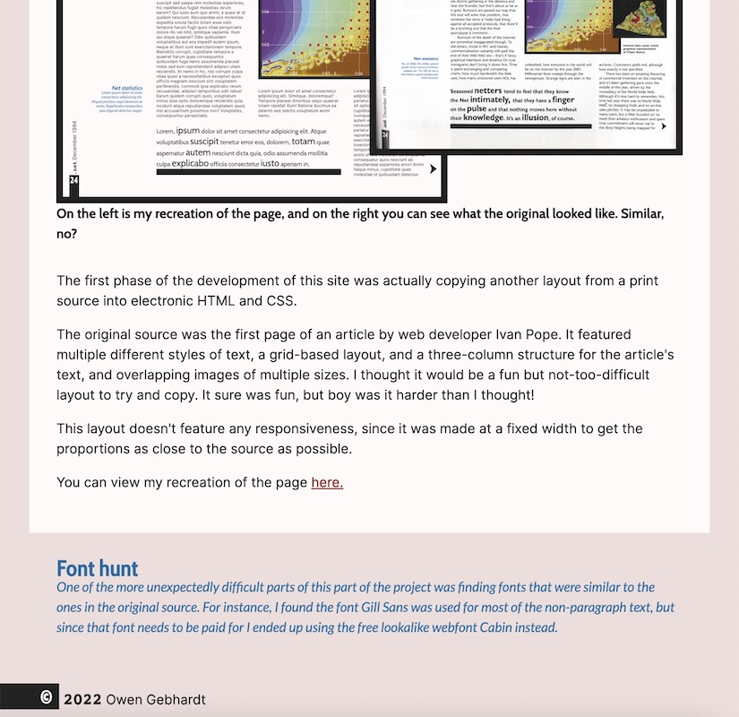
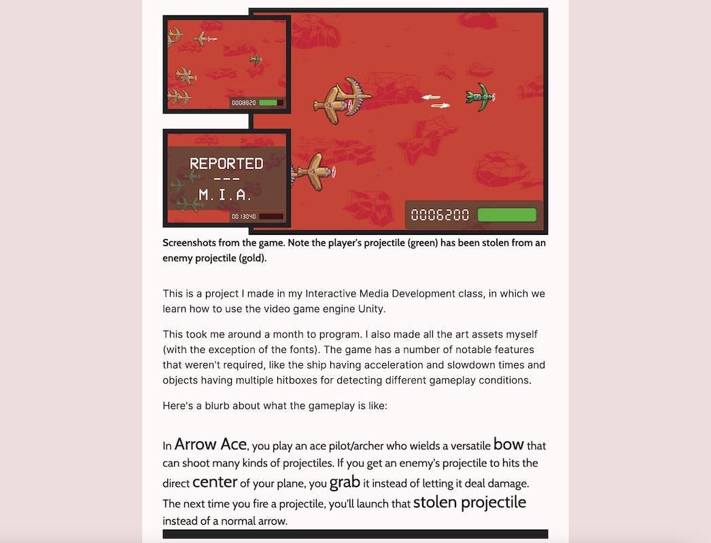
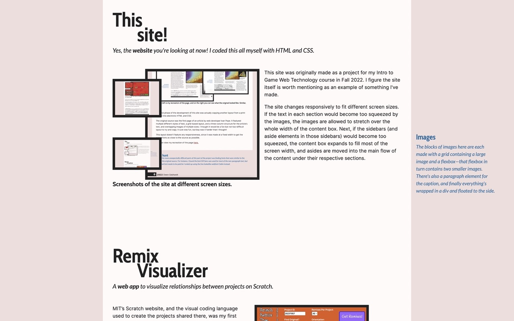
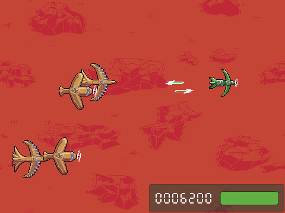
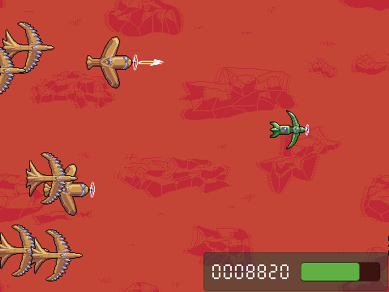
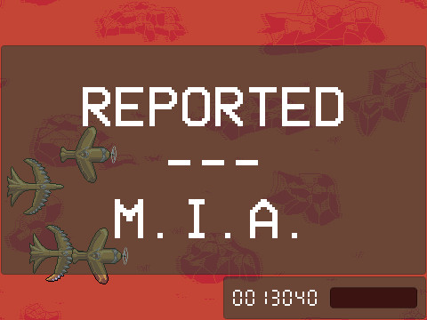
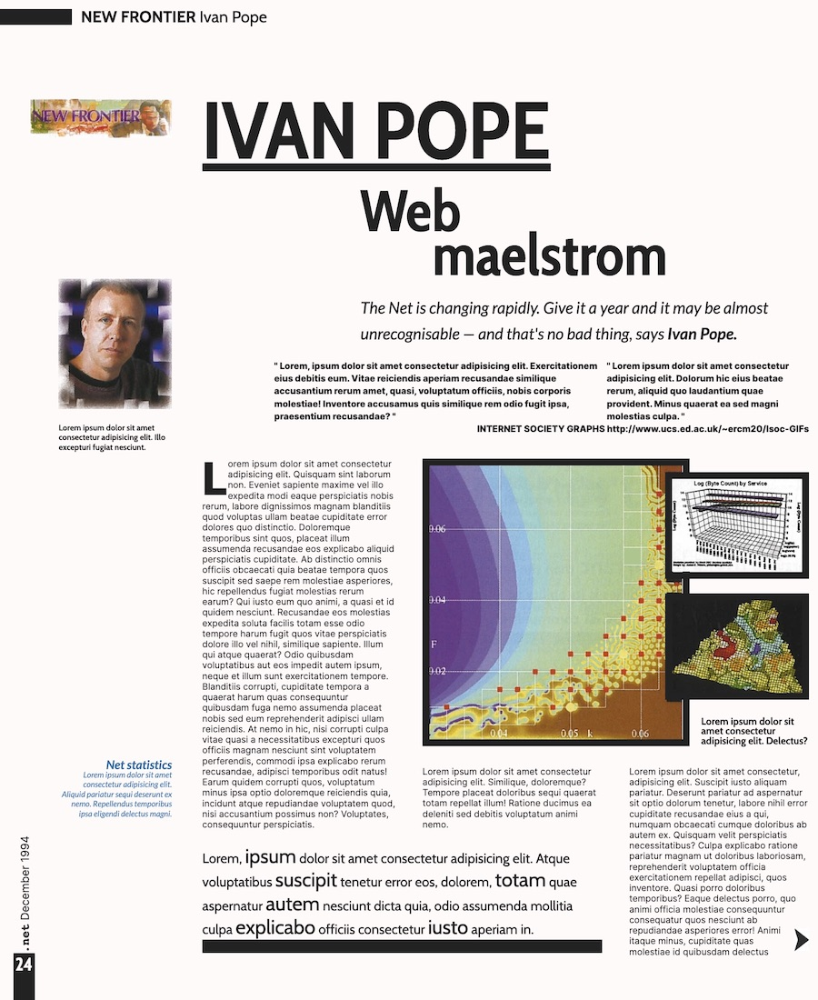
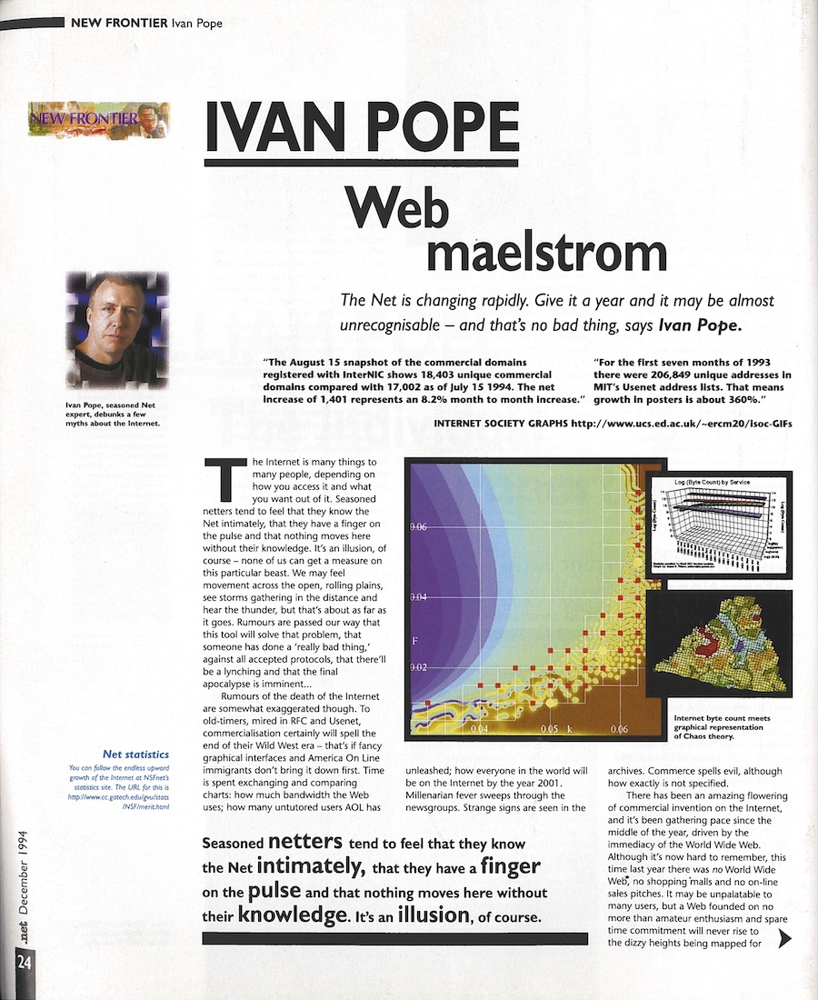

TODO
Ten Grams of
Tangrams
A game I programmed with the WebGL engine PIXI.



TODO
This
site!
Yes, the website you're looking at now! I coded this all myself with HTML and CSS.
Screenshots of the site at different screen sizes.
This site was originally made as a project for my Intro to Game Web Technology course in Fall 2022. I figure the site itself is worth mentioning as an example of something I've made.
The site changes responsively to fit different screen sizes. If the text in each section would become too squeezed by the images, the images are allowed to stretch over the whole width of the content box. Next, if the sidebars (and aside elements in those sidebars) would become too squeezed, the content box expands to fill most of the screen width, and asides are moved into the main flow of the content under their respective sections.
Arrow
Ace
A shoot-em-up game I made for my Unity class.
Click here to play it!



Screenshots from the game. Note the player's projectile (green) has been stolen from an enemy projectile (gold).
This is a project I made in my Interactive Media Development class, in which we learn how to use the video game engine Unity.
In Arrow Ace, you play an ace pilot/archer who wields a versatilebow that can shoot many kinds of projectiles. If you get an enemy's projectile to hits the direct center of your plane, you grab it instead of letting it deal damage. The next time you hit the fire button, you'll launch that stolen projectile instead of a normal arrow.
This took me around a month to program. I also made all the art assets myself (with the exception of the fonts). I added a number of notable features that weren't required, like the ship having acceleration and slowdown times and objects having multiple hitboxes for detecting different gameplay conditions.
There are two types of enemies: One type waits until you pass in front of it before charging at you, and the other type fires spear projectiles at you. Health is handled with a health bar that depletes when you get hit. Scoring is based on enemy hits and kills, and the amount of points each individual enemy gives out can be doubled (sometimes multiple times) by hitting it in the fuselage or with a special projectile.
There's currently a bug where the UI is too small and the Game Over overlay shows up at all times and in the wrong place on the screen, but this is an issue with the build of the game; in the Unity editor this problem doesn't occur.
Spec
Build
The starting point for the design of this page.


On the left is my recreation of the page, and on the right you can see what the original looked like.
For the first phase of this project's development, The first phase of the development of this site was actually copying another layout from a print source into electronic HTML and CSS.
The original source was the first page of an article by web developer Ivan Pope. It featured multiple different styles of text, a grid-based layout, and a three-column structure for the article's text, and overlapping images of multiple sizes. I thought it would be a fun but not-too-difficult layout to try and copy. It sure was fun, but boy was it harder than I thought!
This layout doesn't feature any responsiveness, since it was made at a fixed width to get the proportions as close to the source as possible.
You can view my recreation of the page here.